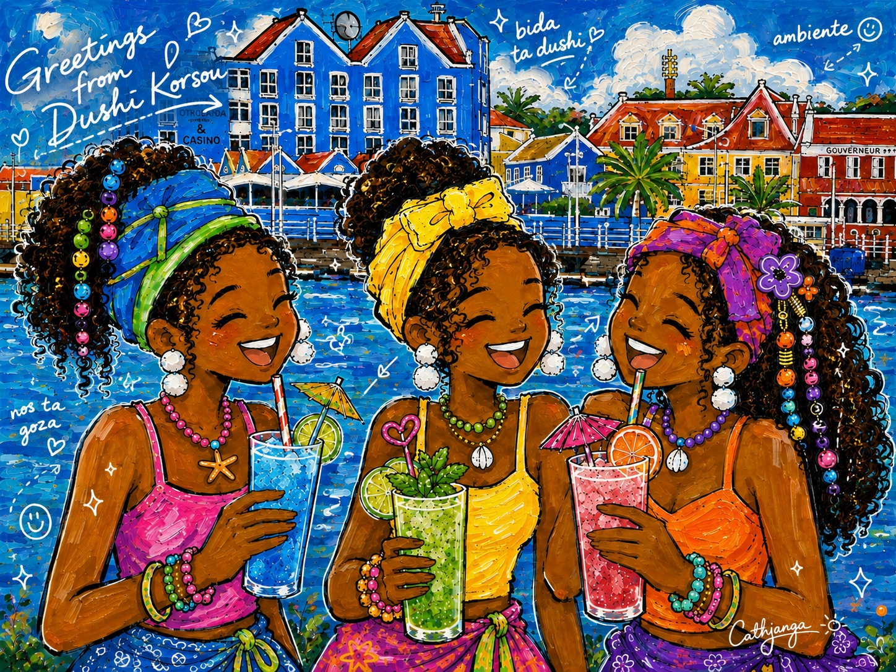
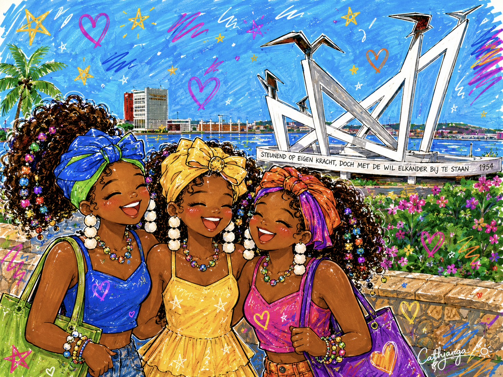
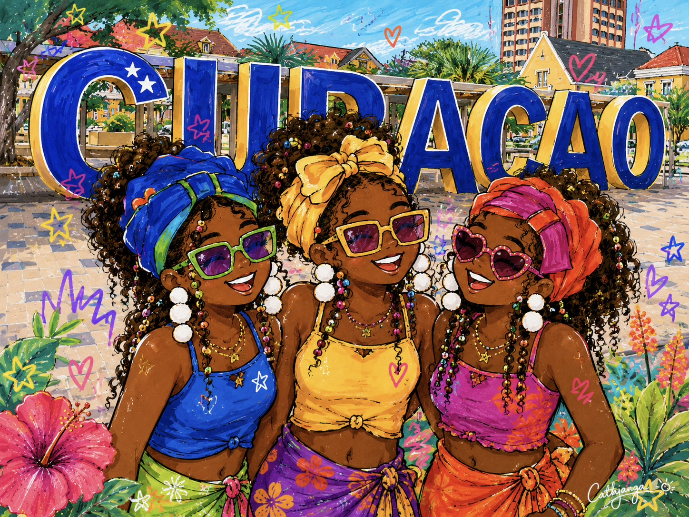

CARIBBEAN VIBES
Bida ta dushi • Nos ta goza
Joyful. Confident. Proudly Caribbean.
Through my art I celebrate women, culture and everyday happiness in the colors of Curaçao.

Bida ta dushi • Nos ta goza

Friendship • Culture • Curaçao

Color • Joy • Island soul
“More color in the world, more joy in everyday life.”